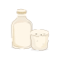
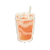
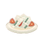

In the food journal
Fictional layout · not deployed UI.
Native 64px placement; portion not shown.

Soy milk
Illustration · not a meal photo

Milk tea
Illustration · not a meal photo

Som tum
Illustration · not a meal photo
Eggplant
Illustration · not a meal photo
Green salad
Illustration · not a meal photo